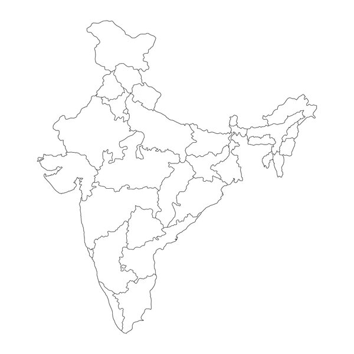

0 / 28
states found
Struggling? A few pointers
- Spelling doesn't have to be perfect — capitalisation is ignored.
- The seven north-eastern states are the ones most people forget.
- Give up any time to see the full list of what you missed.
